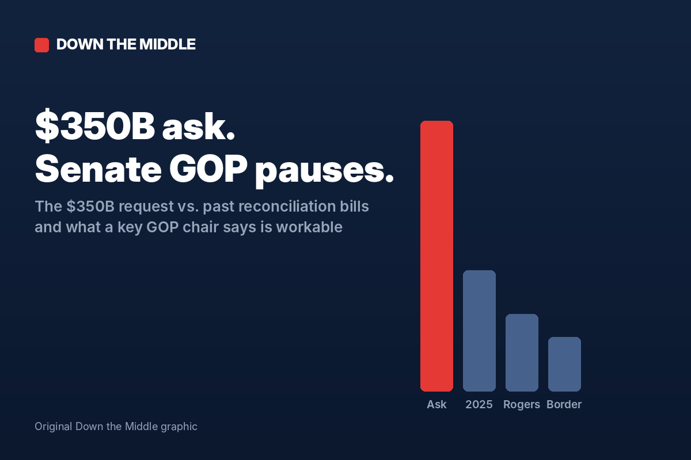
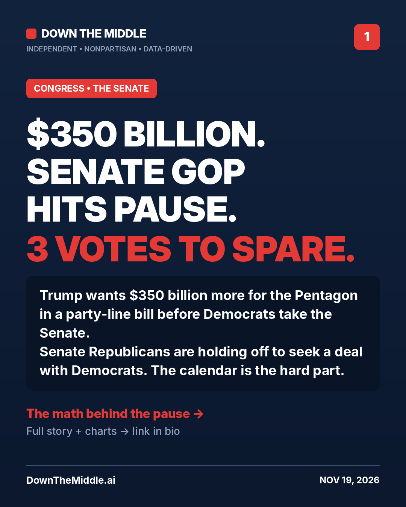
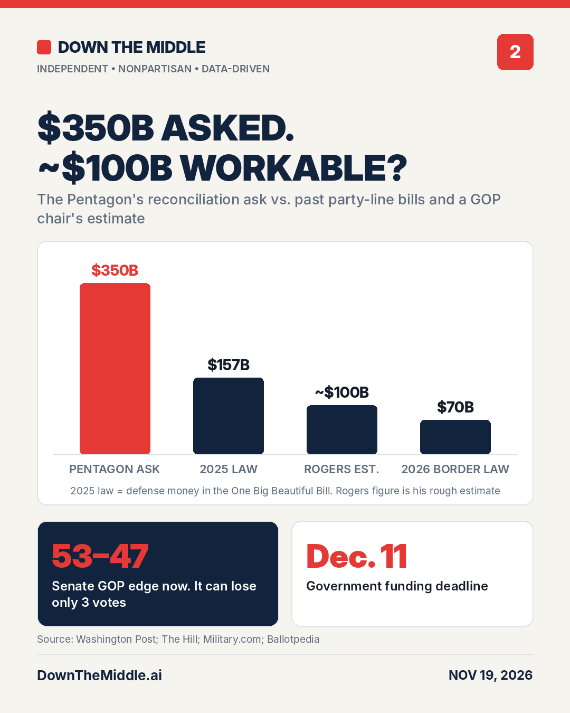

Senate Republicans Hit Pause on Trump’s $350 Billion Pentagon Bill. Here’s the Math.
November 19, 2026 · Independent, nonpartisan analysis

Senate Republicans are holding off on President Trump’s request to pass $350 billion in new Pentagon money through a party-line bill. They want to see first whether Democrats will make a deal, the Washington Post reported Thursday. [1] Majority Leader John Thune and Budget Chair Ron Johnson say the party-line route isn’t off the table. [1] [2] Axios’s Thursday headline was blunter: Republicans are losing hope in “Reconciliation 3.0.” [18]
The money would ride on top of a $1.15 trillion base defense request, for about $1.5 trillion in total next year. [3] [4] We covered the Pentagon’s ninth failed audit and that $1.5 trillion request on Tuesday, and the administration’s separate $50 billion air traffic control ask on Monday. This post picks up the fight from there.
By the numbers
The documented figures behind Thursday’s pause.
What happened this week
Trump renewed his call for the bill on Nov. 12, posting that “Republicans must deliver for our Warriors.” [4] Thune said that day he was interested but didn’t commit. [5] On Wednesday, Deputy Defense Secretary Steve Feinberg pitched Senate Republicans at their closed-door lunch. [3] [9] Afterward, Thune called passage an “open question.” [2] Johnson said a vote probably wouldn’t happen this week. [2] [3]
The House’s top defense Republican was more direct. Rep. Mike Rogers of Alabama, who chairs the Armed Services Committee, said at a Hudson Institute event that $350 billion is “not gonna happen.” He put a workable figure at about $100 billion. [3] Inside the Senate GOP, Sen. Rand Paul of Kentucky opposes a partisan bill that adds spending. [1] Appropriations Chair Susan Collins of Maine has said she would rather pass a defense supplemental. [1] [9]
How big is $350 billion?
The Pentagon’s ask vs. past party-line bills and a GOP chair’s estimate. Hover or tap a bar for the source.
*Rogers’ ~$100 billion is a rough spoken estimate, not a bill. The $157 billion is the defense portion of the 2025 law, as reported by Military.com. The $70 billion border law is the whole bill, not just defense. [3] [8] [13]
Insight 1
Only about 60% of the $350 billion has been spelled out in public
The pieces that have surfaced in reporting add up to about $215 billion: roughly $103 billion for AI, drones and autonomous systems, $48 billion for critical minerals, $47 billion for munitions and $17 billion for the Golden Dome missile shield. [3] [10] That leaves about $135 billion, or 39%, that hasn’t been broken out publicly (our calculation). The $103 billion line comes from a breakdown described as circulating on the Hill, not from a Pentagon document. [10] That gap matters for senators being asked to vote quickly.
What’s in the $350 billion, as reported
Billions of dollars. Hover or tap a bar for the source.
*The ~$135 billion is Down the Middle’s calculation ($350B minus ~$215B itemized). The AI/drones/autonomy figure is from a circulating, unconfirmed breakdown reported by HNGN. Minerals, munitions and Golden Dome figures are confirmed by The Hill. [3] [10]
Insight 2
The ask tops the last two party-line bills’ comparable pieces combined
The 2025 One Big Beautiful Bill Act carried about $157 billion for defense. [8] The 2026 Secure America Act, the second party-line bill, provided about $70 billion for border and immigration enforcement. It passed the Senate 52–47 and the House 214–212. [13] [14] The $350 billion ask is about 2.2 times the 2025 defense money and five times the whole border bill (our calculation). Earlier this year, the House budget plan set aside about $60 billion for defense, and CSIS analysts expected a final bill to land closer to that than to $350 billion. [8]
Unlike the 2025 law, which mixed tax cuts with spending, this bill is pitched as spending alone. House Budget Chair Jodey Arrington has described it as $350 billion with no offsets. [1] CBO estimated the 2025 law would add $3.4 trillion to deficits through 2034. [15]
Insight 3
The calendar is the real whip count
Republicans hold 53 seats, and a reconciliation bill needs 50 votes, with the vice president breaking a tie. [1] [2] With Paul opposed, the party could lose only two more votes. [1] The window is short too. The Senate has about three weeks in session before its winter recess. [2] Sen. Jon Husted’s appointed term ends Dec. 15, and the Post reports the GOP margin shrinks then. [1] After Jan. 3, Democrats hold 56 seats. [12] Thune has said a window remains even if Republicans don’t move before Thanksgiving. [2]
The Senate vote math
Senate seats and votes. Hover or tap a bar for the source.
Reconciliation bills can’t be filibustered, so they need a simple majority instead of 60 votes. [1] [10] The three-vote cushion assumes all 100 senators vote and applies until Husted’s term ends Dec. 15. [1]
How we got here
Solid dots are documented events. Dashed dots are scheduled.
- Jul 2025CBO
Final score: the 2025 reconciliation law adds $3.4 trillion to deficits through 2034. [15] - Jun 5–10, 2026Congress
Second party-line bill, the $70 billion Secure America Act, passes 52–47 and 214–212 and is signed. [13] - Nov 3Voters
Midterms. Democrats win a 56–44 Senate majority, effective in January. [12] - Nov 12Trump
Renews call for a $350 billion Pentagon bill. Thune says he’s interested. [4] [5] - Nov 17Administration
Transportation Secretary Duffy pitches adding aviation money at a Senate GOP lunch. [6] - Nov 18Senate GOP
Feinberg briefs senators. Thune calls passage an “open question.” Rogers says $350 billion won’t happen. [2] [3] [9] - Nov 19Senate GOP
Republicans pause the party-line push to test a deal with Democrats. [1] [18] - Nov 26Calendar
Thanksgiving. Republicans had weighed starting the bill before the holiday. Scheduled [2] [6] - Dec 11Congress
Government funding runs out. Scheduled [3] [8] - Dec 15Senate
Husted’s appointed term ends; the GOP margin shrinks. Scheduled [1] - Jan 3, 2027New Congress
Democrats take control of both chambers. Scheduled [7] [12]
How each side makes its case
Same request, three readings
We describe each position in our own words and check it against the data.
Trump, Pentagon & GOP backers
- Defense Secretary Hegseth calls $350 billion the minimum the military needs. [4]
- Commentator Hugh Hewitt argues Pentagon funding is the top issue and reconciliation lets Republicans pass it by simple majority before Democrats take over. [7]
- Sens. Tom Cotton, John Kennedy and Chuck Grassley have backed moving a bill. [3] [4]
Democrats & fiscal skeptics
- Sen. Jack Reed says Democrats will not “rubber-stamp a bloated, undisciplined budget.” [8]
- Democrats plan to use the Dec. 11 deadline to cut the topline and limit Iran war funding. [8] [11] [17]
- Rand Paul opposes new party-line spending, and CRFB argues any new reconciliation bill should cut deficits. [1] [16]
What the data shows
- $350 billion is more than double the 2025 law’s defense money and roughly 3.5 times what Rogers calls workable. [3] [8]
- About $135 billion of the ask hasn’t been itemized publicly (our calculation). [3] [10]
- With 53 seats and Paul opposed, Republicans can lose only two more votes, and only until Dec. 15. [1]
Down the middle
Both sides have a point. Pentagon leaders say the military needs the money, and even Rogers, who rejects the $350 billion figure, points to a real budget hole from operations in Venezuela and Iran and says a smaller bill is still possible. [3] [4] But the request is large, partly unexplained in public and pitched as spending without offsets. It is also being pushed through a narrow window by a majority that leaves in about six weeks. [1] [10] [12] Republicans are asking whether a smaller deal with Democrats beats a party-line bill they may not have the votes or time to pass. That question, more than the dollar figure, will decide what the Pentagon gets. The most likely outcomes reported so far are a smaller bill or a bipartisan deal, not the full $350 billion. [3] [8]
What to watch
Before Thanksgiving: whether Thune starts the budget process for a party-line bill or waits on talks with Democrats. [1] [2] [6] The size: whether a revised plan lands near Rogers’ ~$100 billion or the House’s earlier $60 billion. [3] [8] Dec. 11: whether a stopgap funding bill carries defense money or Iran war limits. [8] [11] Dec. 15: how Husted’s exit changes the GOP margin. [1]
Share it


Sources and primary documents
- [1] Washington Post via Yahoo News — Senate Republicans resist Trump’s bid to bypass Democrats on defense funding (Nov 19, 2026)
- [2] CBS News — Thune says it’s still an ‘open question’ whether Senate GOP can pass massive defense bill (Nov 18, 2026)
- [3] The Hill via Yahoo News — Top Republican says $350 billion defense reconciliation topline is ‘not gonna happen’ (Nov 18, 2026)
- [4] The Fiscal Times — Trump renews call for $350 billion defense package (Nov 12, 2026)
- [5] Washington Examiner — Thune open to passing party-line $350 billion military bill before Democrats take power (Nov 12, 2026)
- [6] Washington Examiner — Thune weighs pre-Thanksgiving push to advance Pentagon funding (Nov 17, 2026)
- [7] Washington Examiner (opinion, Hugh Hewitt) — Republicans must use reconciliation to fund the Pentagon (Nov 18, 2026)
- [8] Military.com — Democrats plan to use NDAA and December funding deadline to shrink Trump’s $1.5T defense budget (Nov 9, 2026)
- [9] Jewish Insider — Deputy Defense Secretary Feinberg to brief Republicans on defense funding playbook (Nov 18, 2026)
- [10] HNGN — Dec. 11 funding fight: Iran war, $350B defense plan (Nov 17, 2026)
- [11] The Hill via Yahoo News — Democrats plot to choke off Iran war, with some GOP help (Nov 8, 2026)
- [12] Yahoo News — Final 2026 midterm results: Democrats clinch 56-seat Senate majority (Nov 18, 2026)
- [13] Ballotpedia News — Trump signs the Secure America Act into law (Jun 13, 2026)
- [14] Voteview (primary roll-call data) — Senate vote 795, motion to proceed to S. 2, Secure America Act (Jun 3, 2026)
- [15] Committee for a Responsible Federal Budget — Final OBBBA score confirms long road to fiscal recovery (on CBO’s final score; Jul 21, 2025)
- [16] Committee for a Responsible Federal Budget — Reconciliation 3.0 should be for deficit reduction (Jun 15, 2026)
- [17] Common Dreams — Schumer indicates Democrats will defund the Iran war (Nov 4, 2026)
- [18] Axios — Republicans lose hope in Reconciliation 3.0 (Nov 19, 2026; headline only, article not reviewed)
The ~$215 billion itemized total, the ~$135 billion not itemized, the 2.2x and 5x comparisons and the two-vote cushion after Paul are Down the Middle’s calculations from the cited figures. Rogers’ ~$100 billion is a rough spoken estimate. The ~$103 billion AI/drones/autonomy line is from a circulating breakdown reported by HNGN and is unconfirmed. Senate party counts are as reported by the Washington Post and Yahoo News. The Axios item is cited by headline only.